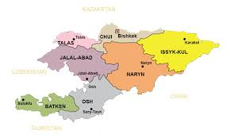
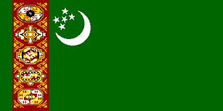

Countries of TURAN!
- Azerbaijan
- Turkey
- Kazakhistan
- Turkmenistan
- Uzbekistan
- Northern Cyprus
- Kyrgyzstan
Azerbaijan
March of Azerbaijan
Azerbaijan (UK: /ˌæzərbaɪˈdʒɑːn, -ˈdʒæn/ (About this soundlisten), US: /ˌɑːzərbaɪˈdʒɑːn, ˌæz-/; Azerbaijani: Azərbaycan [ɑːzæɾbɑjˈdʒɑn]), officially the Republic of Azerbaijan, is a country located at the boundary of Eastern Europe and Western Asia. It is a part of the South Caucasus region, and is bounded by the Caspian Sea to the east, Russia to the north, Georgia to the northwest, Armenia and Turkey to the west, and Iran to the south. Baku is the capital and largest city
The Azerbaijan Democratic Republic proclaimed its independence from the Transcaucasian Democratic Federative Republic in 1918 and became the first secular democratic Muslim-majority state, taking its name from the adjacent region of northwestern Iran for political reasons. In 1922, the country was incorporated into the Soviet Union as the Azerbaijan SSR.
The modern Republic of Azerbaijan proclaimed its independence on 30 August 1991, shortly before the Dissolution of the Soviet Union in the same year. In September 1991, the ethnic Armenian majority of the disputed Nagorno-Karabakh region seceded to form the Republic of Artsakh.The region and seven surrounding districts, internationally recognized as part of Azerbaijan pending a solution to the status of the Nagorno-Karabakh through negotiations facilitated by the OSCE, became de facto independent with the end of the First Nagorno-Karabakh War in 1994. Following the 2020 Nagorno-Karabakh war, the seven districts and parts of Nagorno-Karabakh were returned to Azerbaijani control.
Azerbaijan is a unitary semi-presidential republic. It is one of six independent Turkic states and an active member of the Turkic Council and the TÜRKSOY community. Azerbaijan has diplomatic relations with 182 countries and holds membership in 38 international organizations, including the United Nations, the Council of Europe, the Non-Aligned Movement, the OSCE, and the NATO PfP program. It is one of the founding members of GUAM, the CIS, and the OPCW. Azerbaijan is also an observer state of the WTO.
The vast majority of the country's population (97%) is Muslim, but the constitution does not declare an official religion and all major political forces in the country are secularist. Azerbaijan is a developing country and ranks 88th on the Human Development Index. It has a high rate of economic development, literacy, and a low rate of unemployment. The ruling party, the New Azerbaijan Party, in power since 1993, has been accused of authoritarian leadership and the deterioration of the country's human rights record, including increasing restrictions on civil liberties, particularly on press freedom and political repression.
Turkey
March of Turkey
Turkey (Turkish: Türkiye [ˈtyɾcije]), officially the Republic of Turkey,[a] is a transcontinental country located mainly on the peninsula of Anatolia in Western Asia, with a smaller portion on East Thrace in Southeast Europe. It shares borders with Greece and Bulgaria to the northwest; the Black Sea to the north; Georgia to the northeast; Armenia, Azerbaijan, and Iran to the east;
Iraq to the southeast; Syria and the Mediterranean Sea to the south; and the Aegean Sea to the west. Turks form the vast majority of the nation's population and Kurds are the largest minority.[4] Turkey's capital is Ankara, while its largest city and financial centre is Istanbul (the imperial capital until 1923). One of the world's earliest permanently settled regions, present-day
Turkey was home to important Neolithic sites like Göbekli Tepe, and was inhabited by ancient civilisations such as the Hattians, other Anatolian peoples and Mycenaean Greeks. Following the conquests of Alexander the Great which started the Hellenistic period, most of the ancient regions in modern Turkey were culturally Hellenised, which continued during the Byzantine era.
The Seljuk Turks began migrating in the 11th century, and the Sultanate of Rum ruled Anatolia until the Mongol invasion in 1243, when it disintegrated into small Turkish principalities.[16] Beginning in the late 13th century, the Ottomans started uniting the principalities and conquering the Balkans, and the Turkification of Anatolia increased during the Ottoman period.
After Mehmed II conquered Constantinople (Istanbul) in 1453, Ottoman expansion continued under Selim I. During the reign of Suleiman the Magnificent, the Ottoman Empire became a global power.[11][17][18] From the late 18th century onwards, the empire's power declined with a gradual loss of territories and wars.[19] In an effort to consolidate the weakening empire, Mahmud
II started a period of modernisation in the early 19th century.[20] The Young Turk Revolution of 1908 brought limitations to the authority of the Ottoman Sultan and restored the Ottoman Parliament after a 30-year suspension since 1878, which ushered the empire into a multi-party period.[21][22] The 1913 coup d'état effectively put the country under the control of the Three Pashas,
who were largely responsible for the Empire's entry into World War I in 1914. During World War I, the Ottoman government committed genocides against its Armenian, Assyrian and Pontic Greek subjects.[b][25] After the Ottomans and the other Central Powers lost the war, the Ottoman Empire was partitioned.[26] The Turkish War of Independence against the occupying Allied Powers resulted in the abolition of the Sultanate on 1 November 1922,
the signing of the Treaty of Lausanne (which superseded the Treaty of Sèvres) on 24 July 1923 and the proclamation of the Republic on 29 October 1923. With the reforms initiated by the country's first president, Mustafa Kemal Atatürk, Turkey became a secular, unitary and parliamentary republic; which was later replaced by a presidential system with a referendum in 2017. Since then,
the new Turkish governmental system under president Recep Tayyip Erdoğan and his party, the AKP, has often been described as Islamist and authoritarian.Turkey is a regional power and a newly industrialized country,[32] with a geopolitically strategic location.[33] Its economy, which is classified among the emerging and growth-leading economies, is the twentieth-largest in the world by nominal GDP,
and the eleventh-largest by PPP. It is a charter member of the United Nations, an early member of NATO, the IMF, and the World Bank, and a founding member of the OECD, OSCE, BSEC, OIC, and G20. After becoming one of the early members of the Council of Europe in 1950, Turkey became an associate member of the EEC in 1963, joined the EU Customs Union in 1995, and started accession negotiations with the European Union in 2005.
Kazakhistan
March of Kazakhistan
"Qazaqstan" redirects here. For the Kazakh state television broadcaster, see Qazaqstan (channel).
Republic of Kazakhstan Қазақстан Республикасы (Kazakh)Qazaqstan Respublikasy Kazakhstan is a country in Central Asia[h]
with a land area of 2,724,900 square kilometres (1,052,100 sq mi); it has borders with Russia in the north, China in the
st, and Kyrgyzstan, Uzbekistan, and Turkmenistan in the south. The capital is Nur-Sultan, formerly known as Astana.
It was moved from Almaty, the country's largest city, in 1997. Kazakhstan is the world's largest landlocked country,
and the ninth-largest in the world. It has a population of 18.8 million, and one of the lowest population densities
in the world, at fewer than 6 people per square kilometre (15 people per sq mi). The territory of Kazakhstan has
historically been inhabited by nomadic groups and empires. In antiquity, the nomadic Scythians inhabited the land and the
Persian Achaemenid Empire expanded towards the southern territory of the modern country. Turkic nomads, who trace their
ancestry to many Turkic states such as the First and Second Turkic Khaganates, have inhabited the country throughout
its history. In the 13th century, the territory was subjugated by the Mongol Empire under Genghis Khan.
By the 16th century, the Kazakhs emerged as a distinct group, divided into three jüz. The Russians began advancing
into the Kazakh steppe in the 18th century, and by the mid-19th century, they nominally ruled all of Kazakhstan
as part of the Russian Empire. Following the 1917 Russian Revolution, and subsequent civil war,
the territory of Kazakhstan was reorganised several times. In 1936, it was made the Kazakh Soviet Socialist Republic,
part of the Soviet Union. Kazakhstan was the last of the Soviet republics to declare independence during the dissolution
of the Soviet Union in 1991. Human rights organisations have described the Kazakh government as authoritarian,
and regularly describe Kazakhstan's human rights situation as poor. Kazakhstan is the most dominant
nation of Central Asia economically, generating 60% of the region's GDP, primarily through its oil and gas industry.
It also has vast mineral resources,[17] and is officially a democratic, secular, unitary, constitutional republic
with a diverse cultural heritage.[18] Kazakhstan is a member of the United Nations (UN), WTO, CIS,
the Shanghai Cooperation Organization (SCO), the Eurasian Economic Union, CSTO, OSCE, OIC, CCTS, and TURKSOY.
Kyrgyzstan
March of Kyrgyzstan
"Kirghizia" redirects here. For the Soviet republic, see Kirghiz Soviet Socialist Republic.
The Kyrgyz Republic,[a] commonly known as Kyrgyzstan,[b] is a mountainous landlocked country
in Central Asia. Kyrgyzstan is bordered by Kazakhstan to the north, Uzbekistan to the west,
Tajikistan to the south, and China to the east. Its capital and largest city is Bishkek.
Ethnic Kyrgyz make up the majority of the country's six million people, followed by significant
minorities of Uzbeks and Russians. The Kyrgyz language is closely related to other Turkic languages,
although Russian remains spoken and is a co-official language. Ninety percent of Kyrgyzstan's population are Muslim, with the majority of its population following Sunni Islam.[11] In addition to its Turkic origins, Kyrgyz culture bears elements of Iranic, Mongolian and Russian influence. Kyrgyzstan's history spans a variety of cultures and empires. Although geographically isolated by its highly mountainous terrain, Kyrgyzstan has been at the crossroads of several great civilizations
as part of the Silk Road and other commercial routes. Inhabited by a succession of tribes and clans, Kyrgyzstan has periodically fallen under larger domination. Between periods of self-government it was ruled by Göktürks, the Uyghur Empire and the Khitan people, before being conquered by the Mongols in the 13th century; it regained independence but was invaded by Kalmyks, Manchus and Uzbeks. In 1876, it became part of the Russian Empire, and in 1936, the Kirghiz Soviet Socialist Republic was formed to become a constituent republic of the Soviet Union. Following Mikhail Gorbachev's democratic reforms in the USSR, in 1990 pro-independence candidate Askar Akayev was elected president. On 31 August 1991, Kyrgyzstan declared independence from Moscow and a democratic government was established. Kyrgyzstan attained sovereignty as a nation state after the breakup of the Soviet Union in 1991.
After independence, Kyrgyzstan was officially a unitary presidential republic, then between 2010 and 2021 was officially a unitary parliamentary republic, although it gradually developed an executive president and was governed as a semi-presidential republic before reverting to a presidential system in 2021. Throughout its existence, the country has continued to endure ethnic conflicts,[12][13] revolts,[14] economic troubles,[15][16] transitional governments[17] and political conflict.[18]
Kyrgyzstan is a member of the Commonwealth of Independent States, the Eurasian Economic Union, the Collective Security Treaty Organization, the Shanghai Cooperation Organisation, the Organisation of Islamic Cooperation, the Turkic Council, the Türksoy community and the United Nations. It is a developing country ranked 120th in the Human Development Index, and the second poorest country in Central Asia. The country's transition economy is heavily dependent on oil and natural gas along with deposits of gold, coal and uranium.
Turkmenistan
March of Turkmenistan
Turkmenistan (/tɜːrkˈmɛnɪstæn/ (About this soundlisten) or /ˌtɜːrkmɛnɪˈstɑːn/ (About this soundlisten); Turkmen: Türkmenistan, pronounced [tʏɾkmønʏˈθtɑːn][13]), also known as Turkmenia, is a country in Central Asia, bordered by Kazakhstan to the northwest, Uzbekistan to the north, east and northeast, Afghanistan to the southeast, Iran to the south and southwest and the Caspian Sea to the west. Ashgabat is the capital and largest city of the country. The population of the country is about 6 million, the lowest of the Central Asian republics. Turkmenistan is one of the most sparsely populated nations in Asia. Citizens of Turkmenistan are known as Turkmenistanis (where citizenship and not ethnicity is empathised),[5] Turkmenians[14] or Turkmens.
Turkmenistan has been at the crossroads of civilizations for centuries; Merv is one of the oldest oasis-cities in Central Asia[15] and was once the biggest city in the world.[16] In medieval times, Merv was also one of the great cities of the Islamic world and an important stop on the Silk Road. Annexed by the Russian Empire in 1881, Turkmenistan later figured prominently in the anti-Bolshevik movement in Central Asia. In 1925, Turkmenistan became a constituent republic of the Soviet Union, the Turkmen Soviet Socialist Republic (Turkmen SSR); it became independent after the dissolution of the Soviet Union in 1991.[5]
Turkmenistan possesses the world's fourth largest reserves of natural gas. Most of the country is covered by the Karakum or Black Sand Desert. From 1993 to 2017, citizens received government-provided electricity, water and natural gas free of charge.[18]
The country is widely criticized for its poor human rights. Notable issues were its treatment of minorities, press freedoms, and religious freedoms. After its independence from the Soviet Union in 1991, the sovereign state of Turkmenistan has been ruled by two repressive totalitarian regimes. It was ruled by President for Life Saparmurat Niyazov (also known as Türkmenbaşy or "Head of the Turkmens") until his death in 2006. Gurbanguly Berdimuhamedow became president in 2007 after winning a non-democratic election (he had been vice-president and then acting president previously). The use of capital punishment and the death penalty was formally abolished in the 2008 constitution
Uzbekistan
March of Uzbekistan
Uzbekistan (UK: /ʊzˌbɛkɪˈstɑːn, ʌz-, -ˈstæn/, US: /ʊzˈbɛkɪstæn, -stɑːn/; Uzbek: Oʻzbekiston, pronounced [ozbekiˈstɒn]), officially the Republic of Uzbekistan (Uzbek: Oʻzbekiston Respublikasi), is a doubly landlocked country in Central Asia. It is surrounded by five countries: Kazakhstan to the north; Kyrgyzstan to the northeast; Tajikistan to the southeast; Afghanistan to the south, Turkmenistan to the south-west. Its capital and largest city is Tashkent. Uzbekistan is part of the Turkic speaking world, as well as a member of the Turkic Council. While the Uzbek language is the majority spoken language in Uzbekistan, Russian has widespread use as an inter-ethnic tongue and in governance. Islam is the majority religion in Uzbekistan, with the majority of Uzbeks being non-denominational Muslims.[14]
The first recorded settlers on what is now Uzbekistan were Eastern Iranian nomads, known as Scythians, who founded kingdoms in Khwarazm (8th–6th centuries BC), Bactria (8th–6th centuries BC), Sogdia (8th–6th centuries BC), Fergana (3rd century BC – 6th century AD), and Margiana (3rd century BC – 6th century AD). [15] The area was incorporated into the Iranian Achaemenid Empire and, after a period of Macedonian rule, was ruled by the Iranian Parthian Empire and later by the Sasanian Empire, until the Muslim conquest of Persia in the seventh century. The Early Muslim conquests and the subsequent Samanid Empire converted most of the people, including the local ruling classes, into adherents of Islam. During this period, cities such as Samarkand, Khiva, and Bukhara began to grow rich from the Silk Road, and witnessed the emergence of leading figures of the Islamic Golden Age, including Muhammad al-Bukhari, Al-Tirmidhi, al Khwarizmi, al-Biruni, Avicenna and Omar Khayyam. The local Khwarazmian dynasty and Central Asia as a whole were decimated by the Mongol invasion in the 13th century, after which the region became dominated by Turkic peoples. The city of Shahrisabz was the birthplace of the Turco-Mongol conqueror Timur (Tamerlane), who in the 14th century established the Timurid Empire and was proclaimed the Supreme Emir of Turan with his capital in Samarkand, which became a centre of science under the rule of Ulugh Beg, giving birth to the Timurid Renaissance. The territories of the Timurid dynasty were conquered by Uzbek Shaybanids in the 16th century, moving the centre of power to Bukhara. The region was split into three states: the Khanate of Khiva, Khanate of Kokand and Emirate of Bukhara. Conquests by Emperor Babur towards the east led to the foundation of India's newest invasions as Mughal Empire. All of Central Asia was gradually incorporated into the Russian Empire during the 19th century, with Tashkent becoming the political center of Russian Turkestan. In 1924, national delimitation created the Uzbek Soviet Socialist Republic as an independent republic within the Soviet Union. Following the dissolution of the Soviet Union, it declared independence as the Republic of Uzbekistan on 31 August 1991.
Uzbekistan is a secular state, with a presidential constitutional government in place. Uzbekistan comprises 12 regions (vilayats), Tashkent City and one autonomous republic, Karakalpakstan. While non-governmental human rights organisations have defined Uzbekistan as "an authoritarian state with limited civil rights".[16][17], significant reforms by Uzbekistan's second president have been made following the death of dictator Islam Karimov. Because of these reforms, relations with the neighbouring countries of Kyrgyzstan, Tajikistan and Afghanistan drastically improved. A United Nations report of 2020 found much progress toward achieving the UN's sustainable development goals.
The Uzbek economy is in a gradual transition to the market economy, with foreign trade policy being based on import substitution. In September 2017, the country's currency became fully convertible at market rates. Uzbekistan is a major producer and exporter of cotton. With the gigantic power-generation facilities from the Soviet era and an ample supply of natural gas, Uzbekistan has become the largest electricity producer in Central Asia.[23] From 2018 to 2021, the republic received a BB- rating by both Standard and Poor (S&P) and Fitch.[24] Strengths indicated by Brookings Institution include Uzbekistan having large liquid assets, high economic growth, and low public debt. Among the constraints holding the republic back is the low GDP per capita. Uzbekistan is a member of the CIS, OSCE, UN and the SCO.
Northern Cyprus
March of Northern Cyprus
Northern Cyprus (Turkish: Kuzey Kıbrıs), officially the Turkish Republic of Northern Cyprus (TRNC; Turkish: Kuzey Kıbrıs Türk Cumhuriyeti, KKTC), is a de facto state[5][6] that comprises the northeastern portion of the island of Cyprus. Recognised only by Turkey, Northern Cyprus is considered by all other states to be part of the Republic of Cyprus.
Northern Cyprus extends from the tip of the Karpass Peninsula in the northeast to Morphou Bay, Cape Kormakitis and its westernmost point, the Kokkina exclave in the west. Its southernmost point is the village of Louroujina. A buffer zone under the control of the United Nations stretches between Northern Cyprus and the rest of the island and divides Nicosia, the island's largest city and capital of both sides.
A coup d'état in 1974, performed as part of an attempt to annex the island to Greece, prompted the Turkish invasion of Cyprus. This resulted in the eviction of much of the north's Greek Cypriot population, the flight of Turkish Cypriots from the south, and the partitioning of the island, leading to a unilateral declaration of independence by the north in 1983. Due to its lack of recognition, Northern Cyprus is heavily dependent on Turkey for economic, political and military support.[7][8][9]
Attempts to reach a solution to the Cyprus dispute have been unsuccessful. The Turkish Army maintains a large force in Northern Cyprus. While its presence is supported and approved by the TRNC government, the Republic of Cyprus, the European Union as a whole, and the international community regard it as an occupation force, and its presence has been denounced in several United Nations Security Council resolutions.
Northern Cyprus is a semi-presidential, democratic republic with a cultural heritage incorporating various influences and an economy that is dominated by the services sector. The economy has seen growth through the 2000s and 2010s, with the GNP per capita more than tripling in the 2000s, but is held back by an international embargo due to the official closure of the ports in Northern Cyprus by the Republic of Cyprus. The official language is Turkish, with a distinct local dialect being spoken. The vast majority of the population consists of Sunni Muslims, while religious attitudes are mostly moderate and secular.[11] Northern Cyprus is an observer state of ECO and OIC under the title "Turkish Cypriot State", and of PACE under the title "Turkish Cypriot Community".